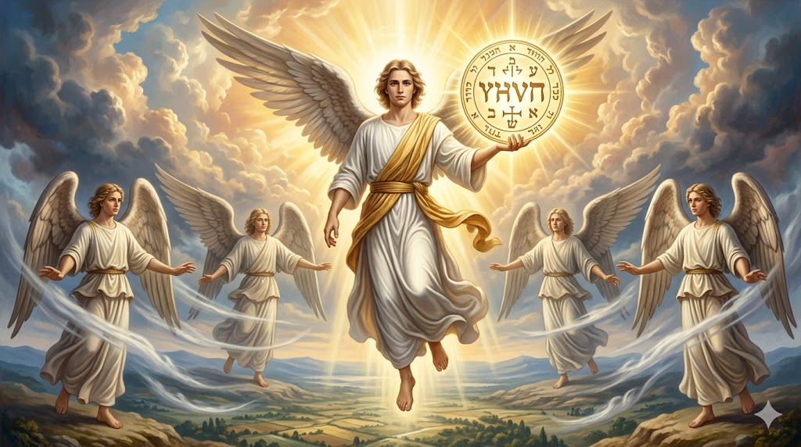

Introdução
Em toda a Bíblia apenas os capítulos 7 e 14 de Apocalipse tratam do tema dos 144 mil selados. É interessante notarmos que o capítulo 7 encontra-se entre a abertura do sexto selo (Apocalipse 6) e a abertura do sétimo selo (Apocalipse 8). Apocalipse 6 termina falando dos eventos finais da história humana indicando a iminência da vinda de Jesus. Então surge a pergunta: "Por que chegou o grande dia da ira deles e quem é que pode suster-se?" (Apocalipse 6:17).
Quando lemos Apocalipse 8:1, vemos a abertura do sétimo e último selo, que é a própria Volta de Cristo com todos os anjos (Mateus 25:31). Nesta ocasião o Céu estará em silêncio, vazio, por cerca de meia hora profética, ou seja, uma semana literal. Assim, o capítulo 7 responde a pergunta formulada no fim do capítulo 6, "quem poderá suster-se?" Resposta: os 144 mil selados.

O Selo de Deus
🔏 Selo de Deus

Nome, Título e Jurisdição
img/selo-deus.jpg
⚠️ Marca da Besta
Nome da besta na testa ou mão
img/marca-besta.jpg
📜 Os Três Elementos do Selo
Nome: "O Senhor teu Deus"
Título: Criador - "fez o Senhor"
Jurisdição: "os céus e a terra, o mar e tudo o que neles há"
Êxodo 20:8-11
🔗 Lealdade a Toda a Lei
Tiago afirma que se alguém guarda nove mandamentos e tropeça em um, se torna culpado de todos (Tiago 2:10). O selo representa lealdade completa a Deus.
Por que 144 Mil?
O número 144 mil é resultado da multiplicação de 12 X 12 X 1.000 = 144.000.
• 12 é o número das tribos de Israel do Antigo Testamento. Representa também o número da igreja construída sobre o fundamento dos doze apóstolos (Efésios 2:20). Na Nova Jerusalém, as doze portas são nomeadas após as doze tribos de Israel e seus doze fundamentos com os nomes dos doze apóstolos.
• Assim, o número 144 (12 x 12) representa a totalidade de Israel, ou seja, a totalidade do povo de Deus - Antigo e Novo Testamento.
📊 O Significado do Número 1.000
| Significado | Referência Bíblica |
|---|---|
| Número literal | Números 31:5 |
| Subdivisão tribal | Josué 22:14,21; 1 Samuel 10:19; 23:23 |
| Unidade militar (1.000 soldados) | Números 1:16; 10:4; 31:4-6; 1 Samuel 8:12; 18:13 |
| "Milhares de Israel" = exército de Israel | Êxodo 18:21,25; 1 Samuel 22:7 |
Os 144 mil selados compõem-se de 144 unidades militares, doze de cada tribo, significando uma totalidade de Israel. João utiliza imagens de uma batalha para retratar a igreja em seu aspecto de luta terrestre, uma igreja militante.
Identificando os 144 Mil
A Grande Multidão
Na visão, João vê uma grande multidão vestida de branco, com palmas nas mãos e um cântico nos lábios. Este é o cântico da vitória, ou seja, terminou o tempo de prova e eles agora se encontram diante de Deus.
👑 Vestes Brancas
Símbolo da justiça de Cristo imputada aos salvos (Apocalipse 19:8). Representa a pureza e vitória alcançada através do sangue do Cordeiro.
🌴 Palmas nas Mãos
Símbolo de vitória e triunfo. No Antigo Testamento, as palmas eram usadas nas festas de celebração (Levítico 23:40). Aqui representam a vitória final sobre o pecado.
Conclusão: A Grande Decisão
Aproxima-se o dia em que todos os seres humanos estarão divididos em apenas dois grupos. Cada um deles terá seu sinal identificador - selo de Deus ou selo da besta.
Escolher a qual destes grupos vamos pertencer é um assunto de vida ou morte, que devemos resolver aqui e agora. A quem vamos manifestar lealdade? Que nome vamos ter? Que sinal ou selo vamos possuir? Decida agora mesmo obedecer a Deus e à Sua palavra.
📝 MINHA DECLARAÇÃO DE FÉ
Assinale com um X se concordar com as declarações abaixo: